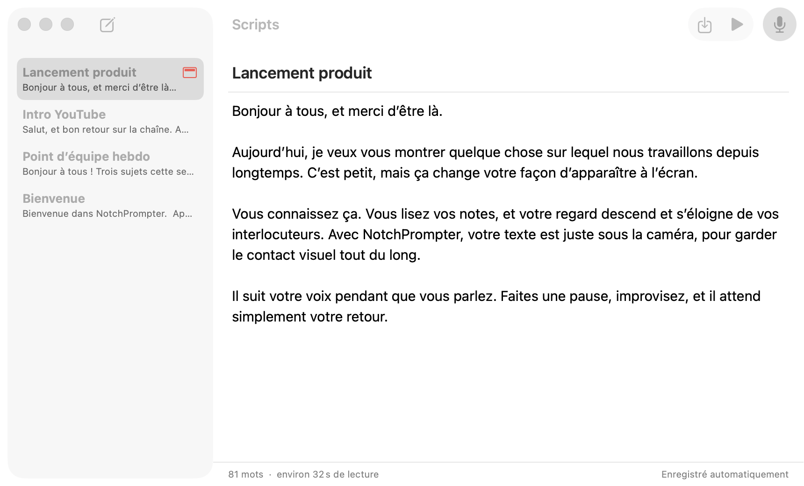
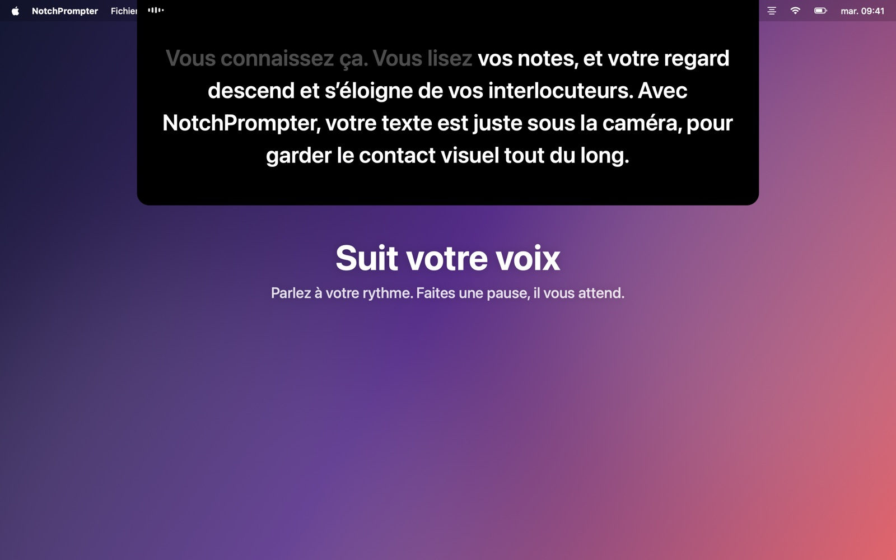
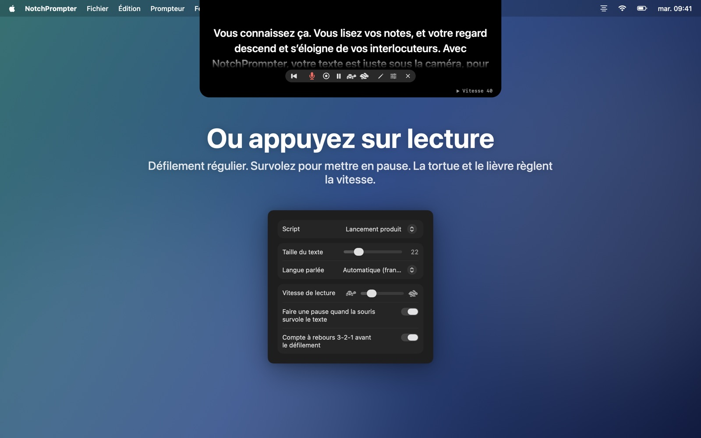
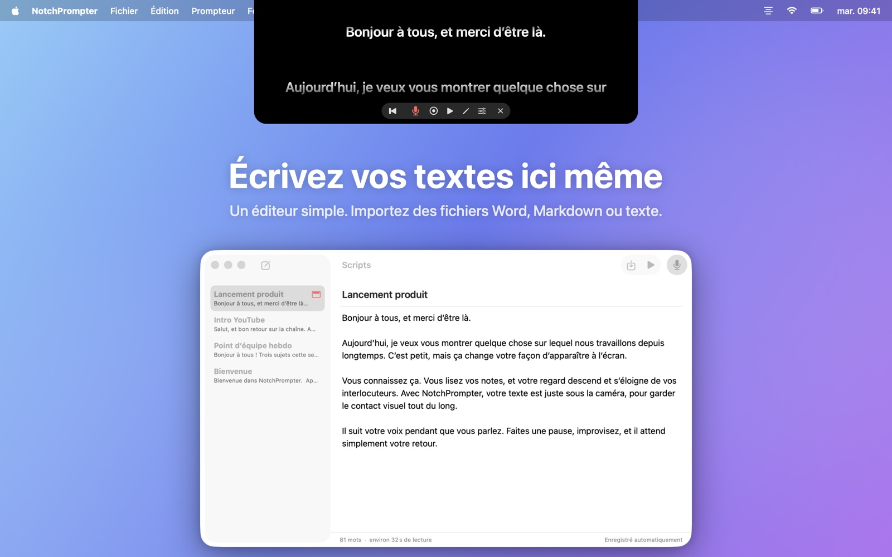
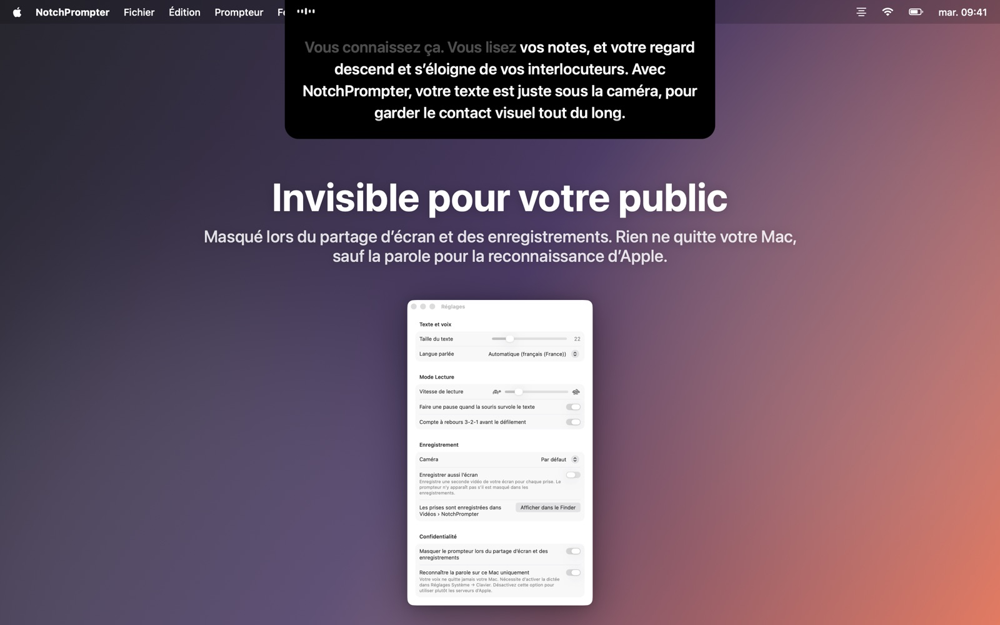

Gardez le contact visuel pendant que vous lisez
NotchPrompter place votre texte juste sous la caméra et suit votre voix. Dans toutes les langues, même quand vous sautez un passage, et entièrement sur votre Mac.
Gratuit et open source. Pour macOS 15 Sequoia ou version ultérieure. Idéal sur un MacBook avec encoche, et fonctionne sur tout Mac avec une caméra en haut de l’écran.
Voyez-le en action
Lisez, faites une pause, sautez un passage. Le prompteur suit votre rythme.
Tout ce qu’il vous faut. Rien de superflu.
Un petit panneau noir sous votre caméra, quelques boutons clairs, un petit éditeur pour vos textes et un bouton d’enregistrement.
Suit votre voix
Appuyez sur le micro et parlez. Les mots suivants sont toujours juste sous la caméra. Ceux que vous avez déjà prononcés s’estompent.
Toutes les langues, automatiquement
NotchPrompter détecte la langue de votre texte et l’écoute. Anglais, norvégien, allemand, espagnol, japonais et des dizaines d’autres.
Suit le rythme quand vous sautez un passage
Sautez une phrase, changez un mot, dites « euh ». Il retrouve où vous en êtes et avance avec vous. Faites une pause, il vous attend.
Ou appuyez sur lecture
Défilement fluide avec compte à rebours 3-2-1. Survolez pour mettre en pause, et réglez la vitesse avec la tortue et le lièvre.
Éditeur intégré
Écrivez et rangez tous vos textes au même endroit. Importez des fichiers Word, Markdown, RTF ou texte. Enregistrement automatique.
Filmez-vous
Appuyez sur enregistrer pour vous filmer avec votre caméra et votre micro pendant que vous lisez. Chaque prise est enregistrée sous forme de vidéo dans votre dossier Vidéos.
Invisible pour votre public
Masqué lors du partage d’écran, dans les captures d’écran et les enregistrements. Vous seul le voyez.
Fonctionne entièrement sur votre Mac
La parole est reconnue sur votre Mac, pas dans le cloud. Aucun compte, aucun pistage. Vos textes et vos enregistrements ne quittent jamais votre Mac.
Vos textes, à un clic
Cliquez sur le crayon dans le prompteur pour ouvrir l’éditeur. Choisissez un texte, appuyez sur le micro et commencez à parler.
- Écrivez ou collez votre texte, ou importez un fichier.
- Appuyez sur Lire à voix haute.
- Regardez la caméra et parlez.

Conçu pour la caméra
Appels vidéo, YouTube, cours, webinaires et présentations.




Questions
Est-ce vraiment gratuit ?
Oui. NotchPrompter est gratuit et open source, sous licence MIT. Pas de pub, pas d’abonnement, pas de compte. Le code source est sur GitHub, où vous pouvez signaler des bugs, proposer des fonctions ou participer au développement.
Fonctionne-t-il sans encoche ?
Oui. Sur un Mac sans encoche, le prompteur se place en haut de l’écran, sous la barre des menus, toujours près de la caméra.
Quelles langues le suivi vocal prend-il en charge ?
Des dizaines, dont l’anglais, le norvégien, l’allemand, le français, l’espagnol, le chinois et le japonais. NotchPrompter détecte la langue de votre texte et écoute cette langue : vous n’avez rien à régler. Vous pouvez choisir une autre langue dans les réglages.
Les autres verront-ils le prompteur quand je partage mon écran ?
Non. Par défaut, il est masqué lors du partage d’écran, dans les captures d’écran et les enregistrements. Vous pouvez désactiver cette option dans les réglages si vous voulez le montrer.
Des données partent-elles dans le cloud ?
Non. La parole est reconnue sur votre Mac (avec la Dictée activée dans Réglages Système), et NotchPrompter n’a aucun serveur. Le suivi vocal n’enregistre jamais l’audio. Une vidéo n’est enregistrée que lorsque vous appuyez sur enregistrer, dans votre propre dossier Vidéos. Lisez la politique de confidentialité.
Quels sont les raccourcis clavier ?
Cliquez sur le prompteur, puis : Espace lecture/pause, V voix, C enregistrer, R retour au début, ↑ ↓ vitesse, + − taille du texte, E éditeur, Esc arrêter.